要求解像度 (Requested resolutions)
シェルは要求値 BTRON_RES で決まり、画面の幅からは推測しない。btron_desk_for_res() が LAPTOP、HANDHELD、POCKET、BAND、CALC を返す。320×320 より下は、128×160 に収まるものを BAND、両辺が 100 より小さいものを CALC、残りを POCKET とする。戦術通信機の旧パネルのうち一覧に無かった 240×345、240×400、240×432、480×690、480×854、480×864 は HANDHELD である。240×320 は既にある 320×240 の縦位置で、POCKET のままである。名前の基は doc/txt/PICO.txt。定義は include/btron/desktop_res.h。
The shell is the requested BTRON_RES. btron_desk_for_res() returns LAPTOP, HANDHELD, POCKET, BAND, or CALC. Under the 320×320 square, a mode that fits in 128×160 is BAND, a mode with both sides under 100 is CALC, and the remainder is POCKET. The older tactical-set panels missing from that list — 240×345, 240×400, 240×432, 480×690, 480×854, and 480×864 — are HANDHELD. 240×320 is the portrait of the existing 320×240 mode and stays POCKET. The names begin from doc/txt/PICO.txt. The enum is include/btron/desktop_res.h.
| BTRON_RES | Pixels | Name | Engine |
|---|---|---|---|
| LAPTOP — command post, 800×600 and larger | |||
| BTRON_RES_VESA_1280X1024 | 1280×1024 | VESA Desktop | LAPTOP |
| BTRON_RES_WORK_1024X768 | 1024×768 | Workspace Desktop | LAPTOP |
| BTRON_RES_WS_800X600 | 800×600 | Workstation Desktop | LAPTOP |
| HANDHELD — two-hand tactical set | |||
| BTRON_RES_SVGA_640X480 | 640×480 | SVGA Desktop | HANDHELD |
| BTRON_RES_FWVGA_480X864 | 480×864 | Full Wide VGA | HANDHELD |
| BTRON_RES_FWVGA_480X854 | 480×854 | Full Wide VGA | HANDHELD |
| BTRON_RES_VGAPLUS_480X690 | 480×690 | VGA+ | HANDHELD |
| BTRON_RES_WQVGA_240X432 | 240×432 | Wide QVGA | HANDHELD |
| BTRON_RES_WQVGA_240X400 | 240×400 | Wide QVGA | HANDHELD |
| BTRON_RES_QVGAPLUS_240X345 | 240×345 | QVGA+ | HANDHELD |
| POCKET — one-hand set, <320×320 | |||
| BTRON_RES_VGA_320X240 | 320×240 | VGA Desktop | |
| BTRON_RES_HQVGA_240X160 | 240×160 | HQVGA | |
| BTRON_RES_S40_208X208 | 208×208 | Series 40 | |
| BTRON_RES_S60_176X208 | 176×208 | Series 60 | |
| BTRON_RES_QCIF_176X144 | 176×144 | QCIF | |
| BTRON_RES_GB_160X144 | 160×144 | Game Boy | |
| BAND — strap, <128×160 | |||
| BTRON_RES_S30_128X160 | 128×160 | Series 30, Nokia 2630, 3500, 6650 | BAND |
| BTRON_RES_QQVGA_160X120 | 160×120 | QQVGA | BAND |
| BTRON_RES_SQVGA_128X128 | 128×128 | SQVGA | BAND |
| BTRON_RES_SQCIF_128X96 | 128×96 | SQCIF | BAND |
| BTRON_RES_ARDUBOY_128X64 | 128×64 | Arduboy | BAND |
| CALC — key panel, <100×100 | |||
| BTRON_RES_N7110_96X60 | 96×60 | Nokia 7110 | CALC |
| BTRON_RES_N1100_96X64 | 96×64 | TI-81, Nokia 1100, 3410, 3510i, 6310i | CALC |
| BTRON_RES_N1280_96X68 | 96×68 | Nokia 1280, 1600, 2600 | CALC |
| BTRON_RES_QQCIF_88X72 | 88×72 | QQCIF | CALC |
| BTRON_RES_N5110I_84X84 | 84×84 | Nokia 5110i | CALC |
| BTRON_RES_N3310_84X48 | 84×48 | Nokia 3310, 3330, 5110, 8210 | CALC |
共通コントロール (Common controls)
同じ文書を、シェルごとに載っているコントロールで操作する。下の表は、SDK がそのシェルに今描くものだけを示す。BAND と CALC は POCKET と同じ画面である。
The same documents are operated with the controls that shell draws. The tables list only what the SDK paints on that shell today. BAND and CALC use the POCKET screen.
| コントロール (Control) | LAPTOP | HANDHELD | |
|---|---|---|---|
| チェックボックスCheckbox | 設定 | 端末設定 | チェック |
| ラジオボタンRadio button | 設定 | 端末設定 | — |
| プログレスProgress | インストーラ | — | — |
| スクロールバーScrollbar | 窓 | 一覧 | 行送り |
| グループGroup | 設定節 | 見出し | 見出し |
| ラベルLabel | 文字 | 文字 | 文字 |
| テキストボックスText field | — | 一行 | — |
| テキストエリアText area | 文書 | 文書 | テキスト |
| コンボボックスCombobox | インストーラ | — | — |
設定と計器は指令卓と Pi 400 にある。インストーラの進捗とコンボボックスはワークステーション画像にも入る。掌のスクロールは行送りで、つまみは無い。
Settings and the instrument set are on the command post and on Pi 400. The installer's progress bar and combobox are also on the workstation image. Pocket scrolling moves by rows and has no thumb.
計器コントロール (Instrument controls)
計器一式は LAPTOP の指令卓と Pi 400 に載る。車載席も同じシェルである。ワークステーション画像、HANDHELD、POCKET には入らない。
The instrument set ships on the LAPTOP command post and on Pi 400. The vehicle mount is the same shell. It is not in the workstation image, on HANDHELD, or on POCKET.
| コントロール (Control) | 役割 (Role) | シェル (Shell) |
|---|---|---|
| 押しボタンPush switch | 押している間だけオン | LAPTOP |
| トグルToggle switch | 状態を保持する | LAPTOP |
| 三点スイッチStandard triad | 三位置 | LAPTOP |
| 上下セレクタUp/down selector | 一段ずつ送る | LAPTOP |
| ラジオセレクタRadio selector | 一つを選ぶ | LAPTOP |
| ロータリRotary selector | 停止位置まで回す | LAPTOP |
| スライダーSlider volume | 直線の量 | LAPTOP |
| ダイヤルDial volume | 回転の量 | LAPTOP |
| バーメーターBar meter | 量の表示 | LAPTOP |
| 状態ランプStatus lamp | 点灯と消灯 | LAPTOP |
| 数値表示Digital display | 数値の読取り | LAPTOP |
| 方向パッドUniversal pad | 上下左右 | LAPTOP |
LAPTOP — 指令卓と車載席
800×600、1024×768、1280×1024 は同じシェルである。窓を重ねるコンポジタ BTRON_UI_LAPTOP が地図と記録を描く。このページに新しい指令卓の写真は置かない。
800×600, 1024×768, and 1280×1024 are one shell. The window compositor BTRON_UI_LAPTOP draws the maps and the logs. This page does not add a command-post screenshot set.
HANDHELD — 両手の戦術通信機
要求値が 640×480、または 240×345、240×400、240×432、480×690、480×854、480×864 のときシェルは HANDHELD である。SDK の公開画面は 480×640 の縦位置である。2004–2009 年の端末記録は、掌・帯・鍵の画面の後にある。
640×480, and the panels 240×345, 240×400, 240×432, 480×690, 480×854, and 480×864, select HANDHELD. The SDK’s published frames are the 480×640 portrait. The 2004–2009 handset record follows the pocket, strap, and key frames.
HANDHELD — 640×480 の画面
以下の画面は、SDK のフレームバッファが描いた HANDHELD である。480×640 VGA 縦画面（Portrait）、5方向キーによるフォーカス遷移、3ソフトキー、および実身・仮身（Fusen）を、戦術通信機の両手シェルで再現している。
The screens below are drawn by the SDK framebuffer for the HANDHELD shell: a 480×640 portrait, keypad focus, three soft keys, and Real Body / Virtual Body (実身・仮身) on the two-hand tactical set.
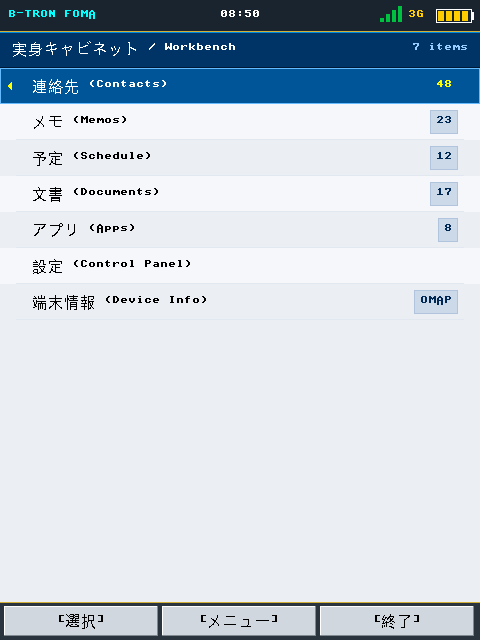
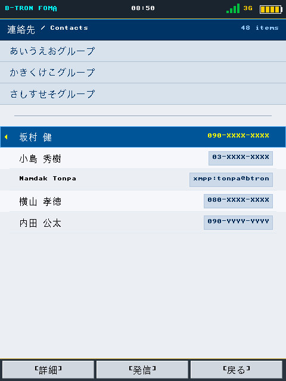
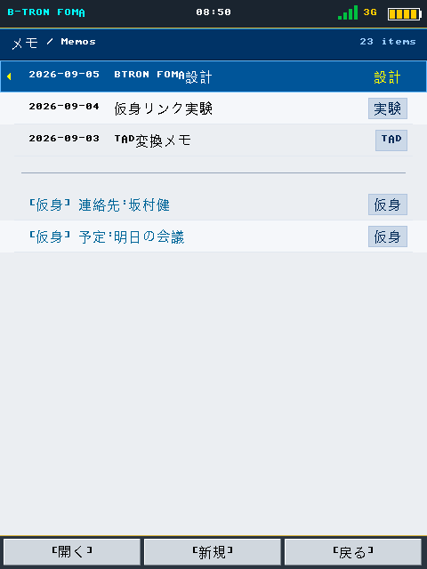
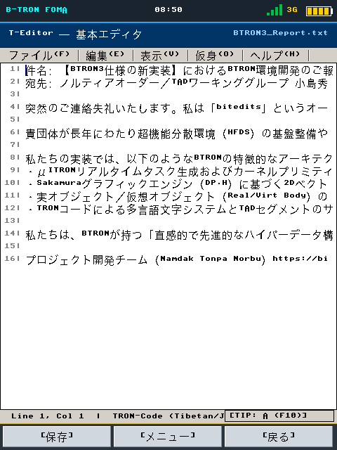
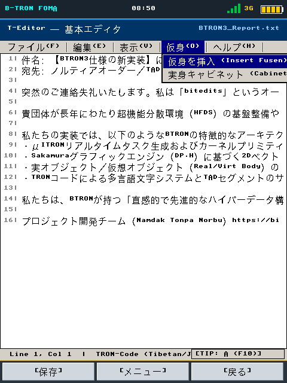
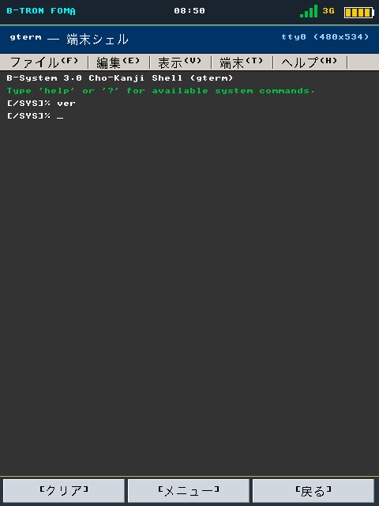

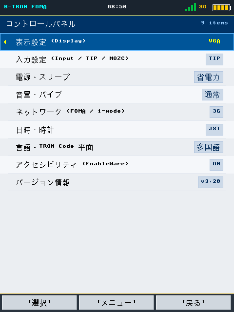
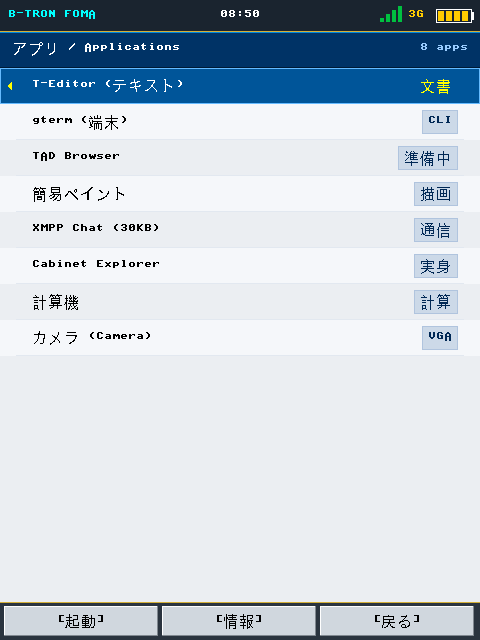
![連絡先詳細 (Contact Detail with [仮身] Fusen)](../img/foma/foma_contact_detail.png)

開いたダイアログ・操作メニュー画面 (Opened Dialogs & Context Menus)
B-TRON / 超漢字の HMI 設計指針に準拠した、モーダルダイアログ・警告ボックス・属性シート・TIP（テキスト入力プロセッサ）・電源管理・着信通知等の OS 構成要素の実動画面。

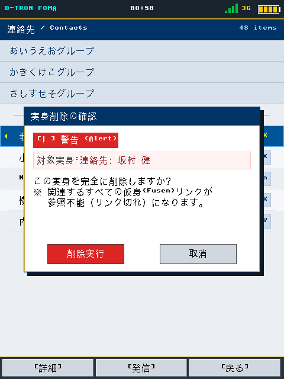


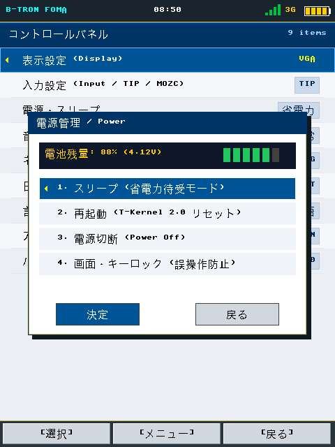

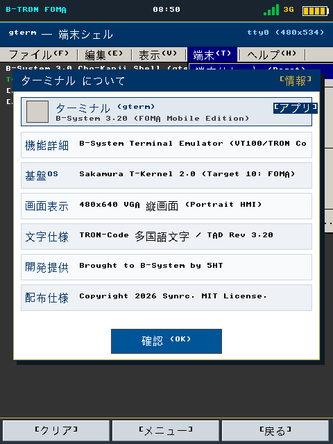
POCKET · BAND · CALC
320×320 未満は一つの帯レイアウトで描く。POCKET は掌の通信機、BAND は 128×160 に収まる帯、CALC は 100×100 未満の鍵である。下の画面は掌の基準パネル、PicoCalc の 320×320 である。320×320 自体は要求一覧に無い。帯の値は segui_profile_picocalc。伸長できる帯は BODY だけ。
Below 320×320, one band layout draws three shells. POCKET is the one-hand set, BAND is the strap that fits in 128×160, and CALC is the key panel under 100×100. The frames are the pocket reference, the PicoCalc 320×320 panel. 320×320 itself is not a requested mode. Band sizes are segui_profile_picocalc. Only BODY may stretch.
- STATUS22 pxclock and battery
- TABBAR22 pxomitted when the form has one tab
- BODYstretchthe only stretchable band
- SOFTKEY26 pxthree captions
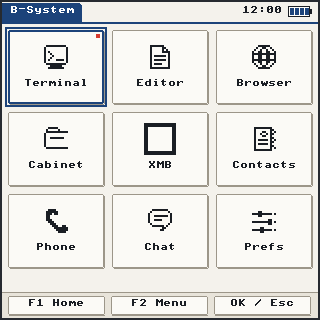

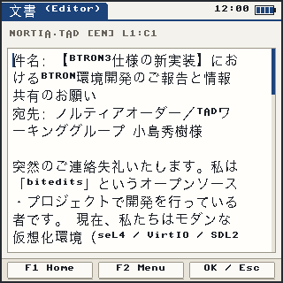
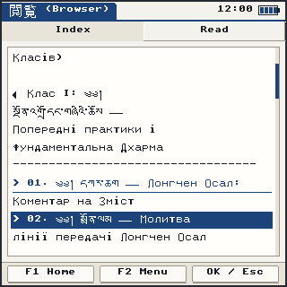


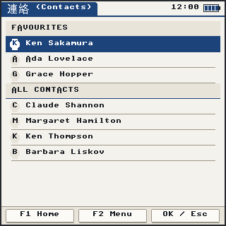
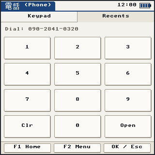
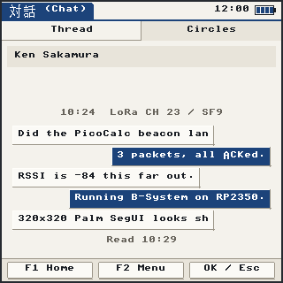
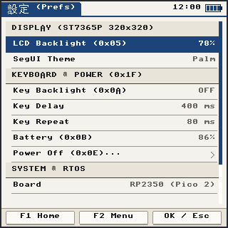


HANDHELD の端末記録 (2004–2009)
この表は、HANDHELD シェルが今も対象にする 2004–2009 年の通信機パネルである。プロセッサは Texas Instruments OMAP（ARM9 / ARM11）とルネサス SH-Mobile（SuperH、一部は ARM と共存）に分かれる。upstream QEMU で実用になるのは ARM コアを持つ機種で、純 SuperH は対象外である。適合度は公式マシンモデル（-M virt とレガシー ARM ボード）への命令セットの一致と、ユーザーランドを起動できる見込みで四段階に分ける。メイン画面のドット数は各機種の公表仕様で、一つの行に二つあるときはそのグループの中で画面が分かれている。
This table is the 2004–2009 communicator record the HANDHELD shell still targets. The processors split into TI OMAP (ARM9 / ARM11) and Renesas SH-Mobile (SuperH, sometimes beside an ARM core). Upstream QEMU is practical only where an ARM core is present. A pure SuperH handset stays out of reach. The four grades follow the instruction-set match to an upstream machine model, -M virt or a legacy ARM board, and whether a userland boot is realistic. Main-panel sizes are the published figures. Two sizes in one row mean the models in that group differ.
| 端末グループ (Model Group) | メイン画面 (Main panel) | SoC / CPU | アーキテクチャ (Architecture) | QEMU 適合度 |
|---|---|---|---|---|
| Fujitsu F900i / F900iT | 240×320 | TI OMAP (161x) | ARM9 (ARMv5) | Good (arm926) |
| Fujitsu F901iC | 240×320 | SH-Mobile3 | SuperH SH-3 | Poor (no SH) |
| Fujitsu F902i | 240×320 | SH-Mobile | SuperH | Poor |
| Fujitsu F903i | 240×320 | SH-Mobile G1 | SuperH + ARM | Medium (arm1136) |
| Fujitsu F905i | 480×864 | SH-Mobile G2 | ARM1136 + SHX2 | Good (arm1136) |
| NEC N900i / N901iC | 240×320 / 240×345 | TI OMAP1610 | ARM9 (ARMv5) | Good (arm926) |
| NEC N902i | 240×345 | TI OMAP | ARM9 | Good |
| NEC N903i | 480×690 | TI OMAP2430 | ARM1136 (ARMv6) | Excellent (arm1136) |
| Panasonic P900i–P903i | 240×320 | TI OMAP (shared) | ARM9 / ARM11 | Good–Excellent |
| Sharp SH900i | 240×320 | TI OMAP1610 | ARM9 | Good (arm926) |
| Sharp SH903i | 240×400 | TI OMAP2430 | ARM1136 | Excellent |
| Sharp SH903iTV / SH905i / SH-01A | 240×400 / 480×854 | SH-Mobile G1/G2/G3 | ARM1136 + SuperH | Good (arm1136) |
| 905SH / 911SH | 240×400 | Proprietary multimedia | Mixed | Medium |
| Raku-Raku F880iES / F883i / F884i | 240×320 / 240×432 | SH-Mobile G1 | ARM + SuperH | Medium–Good |
| Raku-Raku F-01A | 480×864 | SH-Mobile G series | ARM1136 + SuperH | Good (arm1136) |
-M virt -cpu arm1136 と高い命令セット一致を示し、実用的なユーザーランド起動が期待できる。
Close match with upstream
arm1136; practical userland boot feasible.
arm926 または arm1136 で利用可能。周辺チップセットの完全再現は不要な場合に適する。
Usable with
arm926 or arm1136; peripheral fidelity secondary.
ARM core usable; SuperH companion core unsupported.
Pure SuperH → no practical upstream QEMU support.
ARM9 (ARMv5)： OMAP1610 / 161x は QEMU の arm926 で概ね再現できる。キャッシュと MMU は近似で、サイクル正確性は主張しない。
OMAP1610 / 161x map to arm926. Cache and MMU behaviour are approximate.
ARM1136 (ARMv6)： OMAP2430 と SH-Mobile G2/G3 の ARM 側は -cpu arm1136 に近く、B-System の AArch32 試験に使える。
OMAP2430 and the ARM side of SH-Mobile G2/G3 align with -cpu arm1136 and are useful AArch32 test targets.
SuperH： QEMU に SuperH の残滓はあるが、SH-Mobile の LCDC、キーマトリクス、FOMA モデムは未実装である。純 SuperH の端末は Poor とする。 Residual SuperH code does not include the SH-Mobile LCDC, key matrix, or FOMA modem. A pure SuperH handset is rated Poor.
通信機の履歴 (History of the communicators)
通信機は指令卓の窓から始まる。800×600 から 1280×1024 まで、地図と記録を重ねて置く。これが LAPTOP であり、車載席も同じシェルである。
次いで通信機は両手に移った。2004–2009 年の国内端末は、その世代の記録である。プロセッサは TI OMAP の ARM と、ルネサス SH-Mobile の SuperH に分かれ、後者の一部は ARM を併せ持った。画面は 240×320 の掌サイズから、240×345、240×400、240×432 を経て、480×690、480×854、480×864 の縦長なパネルへ広がった。SDK が公開する両手の画面は 480×640 の縦位置である。これらの要求値は HANDHELD である。240×320 は 320×240 の縦位置として POCKET に残る。
より小さい面は掌、帯、鍵に残った。320×320 未満が POCKET、128×160 に収まるものが BAND、両辺 100 未満が CALC である。三つのシェルは今も一つの帯レイアウトで描く。
upstream QEMU が実用になるのは ARM コアを持つ機種である。純 SuperH の LCDC、キーマトリクス、モデムは未実装のままなので、その構成はキットの外に置く。µBTRON SDK は、この履歴を五つのシェルとして一つのコードに残す。要求した解像度が、操作者の手元のシェルを選ぶ。実身と文書は、その解像度で描かれる。
The communicator begins as a window on the command post. From 800×600 through 1280×1024, maps and logs sit in overlapping windows. That shell is LAPTOP, and the vehicle mount is the same shell.
The set then moved into two hands. The 2004–2009 domestic handsets are the record of that generation. The processors split into TI OMAP on ARM and Renesas SH-Mobile on SuperH, some of the latter beside an ARM core. Panels grew from the 240×320 pocket face through 240×345, 240×400, and 240×432, and on to the tall panels at 480×690, 480×854, and 480×864. The two-hand frame the SDK publishes is the 480×640 portrait. Those requested sizes are HANDHELD. 240×320 remains POCKET, as the portrait of 320×240.
The smaller faces stayed in the hand, on the strap, and on the key panel. Under 320×320 is POCKET, a face that fits in 128×160 is BAND, and a face with both sides under 100 is CALC. Those three shells are still drawn by one band layout.
Upstream QEMU is practical where an ARM core is present. The LCDC, key matrix, and modem of a pure SuperH set remain unimplemented, so that configuration stays outside the kit. The µBTRON SDK keeps this history as five shells in one tree. The requested resolution selects the shell in the operator’s hands. The real objects and the documents are drawn at that resolution.